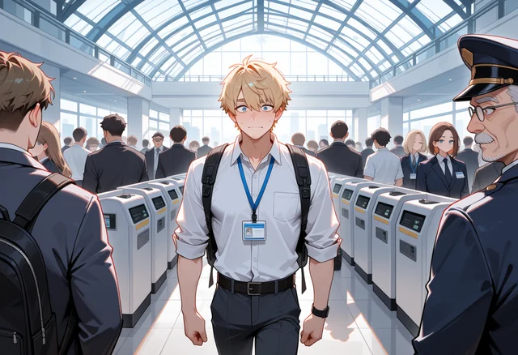
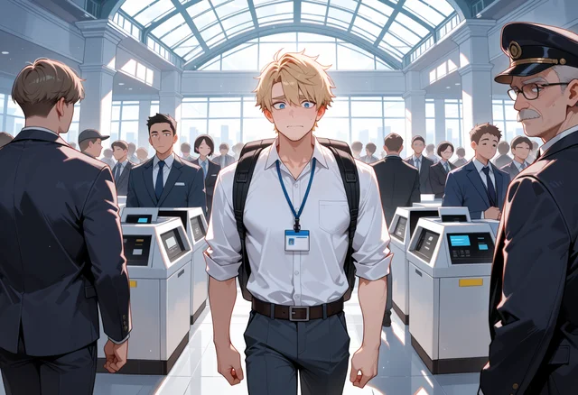
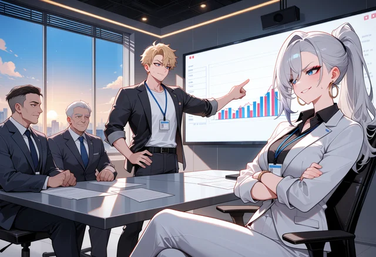
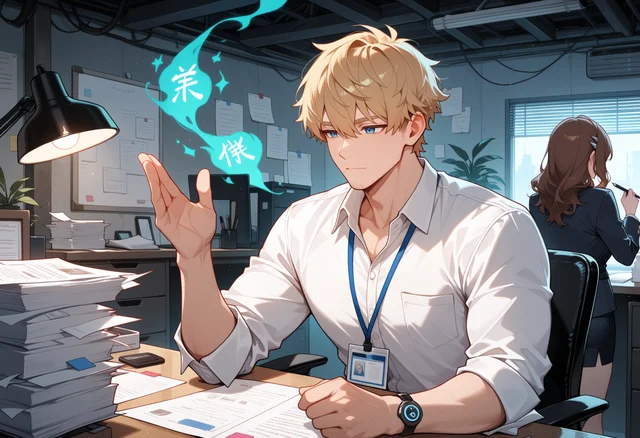
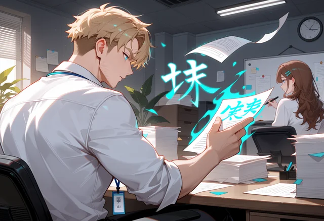
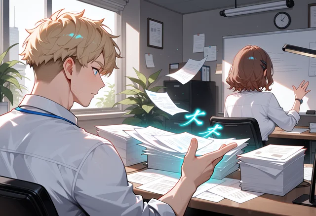

Loose prompts versus structured prompts (Anima)
Same model and scenes. The structured prompts spell out each character, who stands where and looks at whom, the camera, the environment, and the palette and lighting. Captions say what each scene asked for.
The company island at dusk


Morning rush: the guard should stand at the right edge watching you



Canteen: chef at the counter on the left, Mio waving from the right

Meeting: Rei in the right foreground, low angle from her side



Magic: papers into folders, glowing kanji, Emi at the whiteboard, back turned



Bar: you on the left, Jun behind the counter on the right

Main character portrait